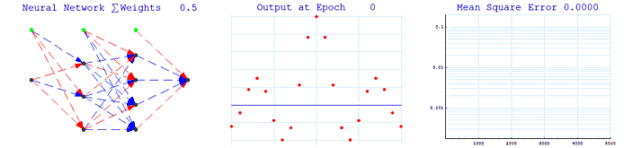

Fast Artificial Neural Network Library (fann)
Fast Artificial Neural Network Library implements multilayer
artificial neural networks in C with support for both fully connected
and sparsely connected networks. Cross-platform execution in both
fixed and floating point are supported. It includes a framework for
easy handling of training data sets. It is easy to use, versatile,
well documented, and fast. PHP, Python and Mathematica bindings are available.

A reference manual accompanies the library with examples and
recommendations on how to use the library.
Features for version 1.2.0:
- Multilayer Artificial Neural Network Library in C
- Backpropagation training (RPROP, Quickprop, Batch, Incremental)
- Easy to use (create, train and run an ANN with just three function calls)
- Fast (up to 150 times faster execution than other libraries)
- Versatile (possible to adjust many parameters and features on-the-fly)
- Well documented (An easy to use reference manual and a 50+ page university report describing the implementation considerations etc.)
- Cross-platform (configure script for linux and unix, dll files for windows, project files for MSVC++ and Borland compilers are also reported to work)
- Several different activation functions implemented (including stepwise linear functions for that extra bit of speed)
- Easy to save and load entire ANNs
- Several easy to use examples (simple train example and simple test example)
- Can use both floating point and fixed point numbers (actually both float, double and int are available)
- Cache optimized (for that extra bit of speed)
- Open source (licenced under LGPL)
- Framework for easy handling of training data sets
- PHP Extension
- Python Bindings
- Mathematica Extension
- RPM package
- Debian package
Last updated Oct 9, 2004